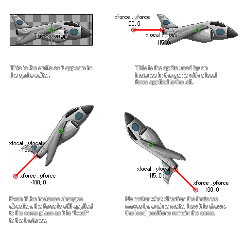

physics_apply_local_force(xlocal, ylocal, xforce, yforce)
| Argument | Description |
|---|---|
| xlocal | The x coordinate relative to the origin where the force will be applied |
| ylocal | The y coordinate relative to the origin where the force will be applied |
| xforce | the x component of the force vector |
| yforce | the y component of the force vector |
Returns : N/A
Another way to use force in the physics world is to apply it locally to an instance. What this means is that the strength and direction of the force are calculated based on the origin (or the position
if it has no sprite) of the instance, without taking into consideration the direction or rotation it may have in the game room or physics world. It should be noted that with this function, forces are not applied
to the center of mass of the object, but rather at a point relative to the instance and they will not be instantly applied as they are dependant on any other forces that are working on the object (like gravity).
This illustration demonstrates how a local force works:

As you can see, the xlocal and ylocal coordinates are calculated based on the axis position always being considered as the origin of the instance (0,0), so no matter where in the room the object is,
xlocal and ylocal are always going to be the same. You then have to decide where the vector components of the force (xforce and yforce) should be positioned relative to the xlocal/ylocal position. The exact
force is defined by the vector we get from the components xforce/yforce in relation to those coordinates - which simply means that the force is calculated as the distance from xlocal/ylocal to xforce/yforce in
Newtons, and the direction is the angle that we get from xlocal/ylocal to xforce/yforce. This may seem slightly confusing, but you just have to look at the illustration to see how this works, and it saves you
some complicated maths!
NOTE : The physics world uses metres for all its calculations, and the ratio of pixels per metre is defined in the room editor or using
physics_world_create.
if keyboard_check(vk_right)
{
physics_apply_local_force(-25, 0, -50, 0);
}
The code above will apply a force to the instance of 50 Newtons from left to right relative to the origin while the right arrow key is pressed.